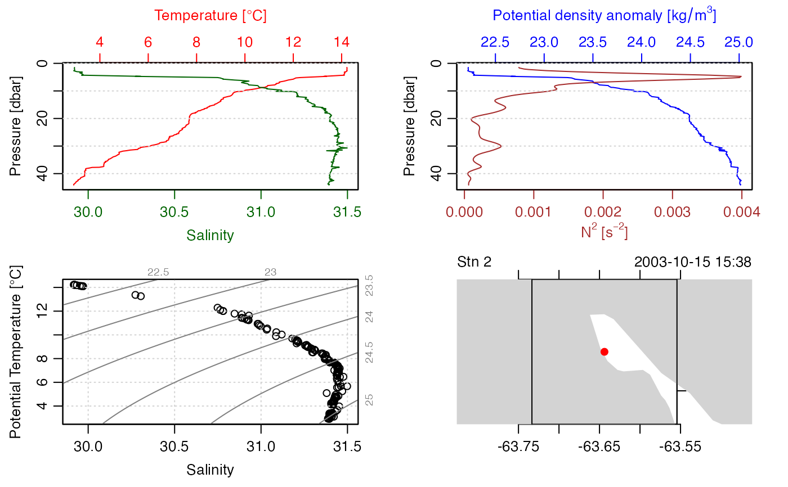

This creates a NetCDF file in a convention that permits later reading by
ncdf2ctd(), and that may be convenient for other purposes as well.
ctd2ncdf(x, varTable = NULL, ncfile = NULL, force_v4 = TRUE, debug = 0)an oce object of class ctd, as created by e.g. oce::as.ctd()
or oce::read.ctd().
character value indicating the variable-naming
scheme to be used, which is passed to read.varTable() to set
up variable names, units, etc.
character value naming the output file. Use NULL
for a file name to be created automatically (e.g. ctd.nc for
a CTD object).
logical value which controls the NetCDF file version during the nc_create step. The default here is TRUE, whereas the ncdf4-package defaults to FALSE (ensuring that the NetCDF file is compatible with NetCDF v3). Some features, including large data sizes, may require v4.
integer, 0 (the default) for quiet action apart from messages and warnings, or any larger value to see more output that describes the processing steps.
Note that ctd2ncdf() defaults varTable to "argo".
The contents of the data slot of the oce object x are as NetCDF
data items. If flags are present in the metadata slot, they are
also saved as data, with names ending in _QC.
In addition to storage in the NetCDF data section, several attributes
are saved as well. These include units for the data, which are tied
to the corresponding variables. The entire metadata slot is stored
as a global attribute named metadata, so that a later call to
ncdf2ctd() will be able to recover the information, using an
eval(parse(text=)) construct. As an aid to processing in other
languages, the following metadata items are stored as
individual global attributes: "latitude", "longitude",
"startTime" and "station".
Other things related to CTD data:
ncdf2ctd()
library(ocencdf)
# example 1: a ctd file without per-variable QC flags
data(ctd, package = "oce")
# Use a temporary nc file to let package pass CRAN checks.
ncfile <- tempfile(pattern = "ctd", fileext = ".nc")
oce2ncdf(ctd, ncfile = ncfile)
#> Converting temperature from IPTS-68 scale to ITS-90 scale.
CTD <- as.ctd(ncdf2oce(ncfile))
file.remove(ncfile)
#> [1] TRUE
summary(CTD)
#> CTD Summary
#> -----------
#>
#> * File: "/Users/kelley/git/oce/create_data/ctd/ctd.cnv"
#> * Start time: 2003-10-15 15:38:38
#> * Cruise: Halifax Harbour
#> * Vessel: Divcom3
#> * Station: Stn 2
#> * Mean Location: 44.684N 63.644W
#> * Data Overview
#>
#> Min. Mean Max. Dim. NAs OriginalName
#> scan 130 220 310 181 0 scan
#> timeS [s] 129 219 309 181 0 timeS
#> pressure [dbar] 1.48 22.885 44.141 181 0 PRES
#> depth [m] 1.468 22.698 43.778 181 0 depS
#> temperature [°C, IPTS-68] 2.9183 7.5045 14.233 181 0 TEMP
#> salinity [PSS-78] 29.916 31.219 31.498 181 0 PSAL
#> flag 0 0 0 181 0 flag
#>
#> * Processing Log
#>
#> - 2024-01-26 13:27:32 UTC: `create 'ctd' object`
#> - 2024-01-26 13:27:32 UTC: `as.ctd(salinity = ncdf2oce(ncfile))`
plot(CTD)

# example 2: a ctd file with per-variable QC flags
data(section, package = "oce")
stn <- section[["station", 100]]
# Use a temporary nc file to let package pass CRAN checks.
ncfile <- tempfile(pattern = "ctd", fileext = ".nc")
oce2ncdf(stn, ncfile = ncfile)
#> Converting temperature from IPTS-68 scale to ITS-90 scale.
STN <- as.ctd(ncdf2oce(ncfile))
file.remove(ncfile)
#> [1] TRUE
summary(STN)
#> CTD Summary
#> -----------
#>
#> * Start time: 1993-10-22 03:10:00
#> * Station: 109
#> * Mean Location: 36.323N 69.376W
#> * Water depth: 4499
#> * Data Overview
#>
#> Min. Mean Max. Dim. NAs OriginalName
#> pressure [dbar] 11.4 2182.5 4398.3 24 0 PRES
#> temperature [°C, IPTS-68] 2.2228 7.3822 23.548 24 0 TEMP
#> salinity [PSS-78] 34.883 35.315 36.692 24 0 PSAL
#> salinityBottle [PSS-78] 34.889 35.315 36.702 24 0 SALNTY
#> DOXY 144.9 246.91 282.1 24 0 -
#> silicate [μmol/kg] 1.71 16.853 36.52 24 0 SILCAT
#> nitrite [μmol/kg] 0 0.022 0.08 24 19 NITRIT
#> NO2+NO3 [μmol/kg] 0 14.619 23.73 24 0 NO2+NO3
#> phosphate [μmol/kg] 0 0.8925 1.39 24 0 PHSPHT
#>
#> * Data-quality Flag Scheme
#>
#> name "WHP bottle"
#> mapping list(no_information=1L, no_problems_noted=2L, leaking=3L, did_not_trip=4L, not_reported=5L, discrepency=6L, unknown_problem=7L, did_not_trip.1=8L, no_sample=9L)
#> default c(1L, 3L, 4L, 5L, 6L, 7L, 8L, 9L)
#>
#> * Data-quality Flags
#>
#> salinity: "2" 22, "3" 2
#> salinityBottle: "2" 24
#> oxygen: "2" 24
#> silicate: "2" 24
#> nitrite: "2" 5, "5" 19
#> NO2+NO3: "2" 24
#> phosphate: "2" 24
#> DOXY: "2" 24
#>
#> * Processing Log
#>
#> - 2024-01-26 13:27:33 UTC: `create 'ctd' object`
#> - 2024-01-26 13:27:33 UTC: `as.ctd(salinity = ncdf2oce(ncfile))`
plot(STN)